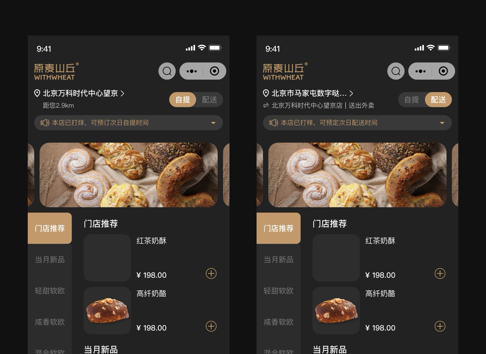
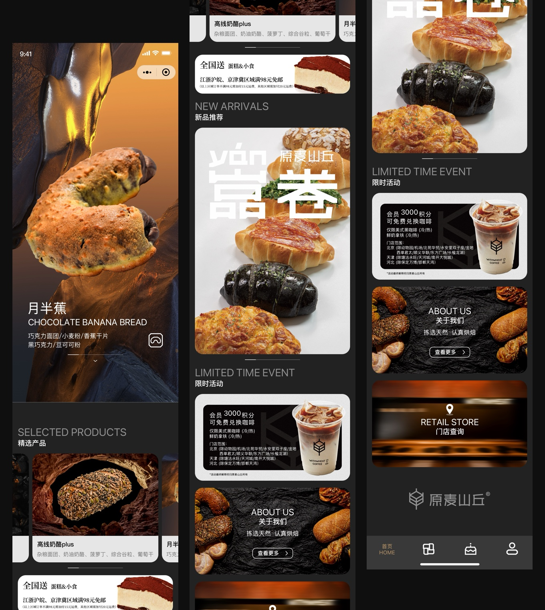
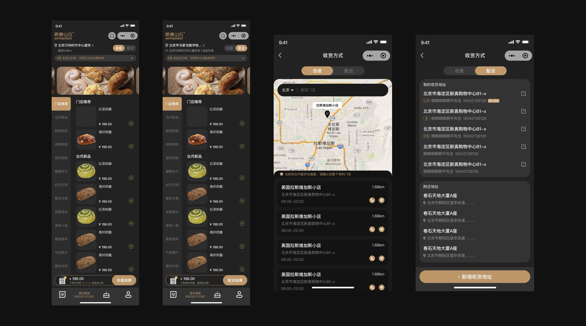
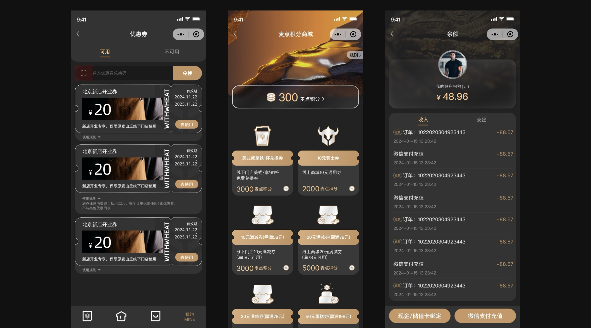
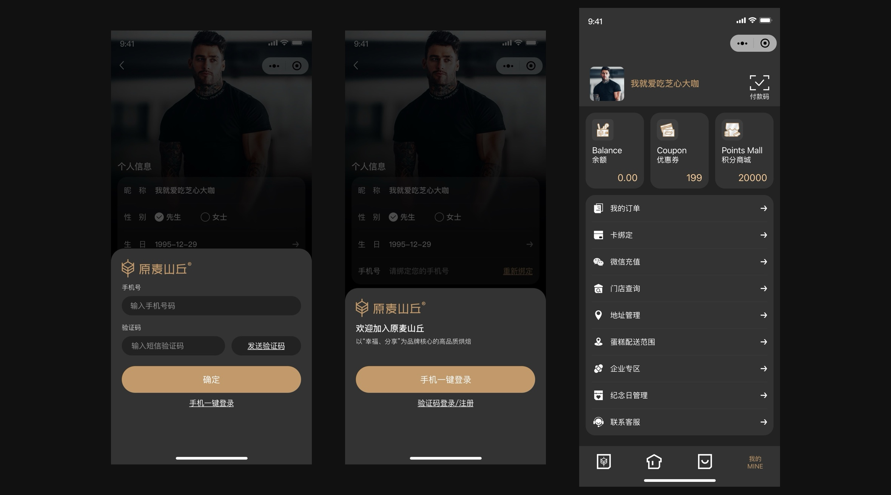

01 / CHANNEL
区分自提与订购
区分自提与订购
更快进入购买场景
将门店自提、线上订购与蛋糕配送按履约方式分流，并在商城顶部持续反馈当前门店与收货方式。用户进入商城后能够先确认“在哪里买、如何取货”，再进行选品，减少场景切换带来的理解成本。

原麦山丘小程序承接门店自提、线上订购、蛋糕配送与会员服务，是品牌连接用户日常消费的核心触点。本次升级围绕“更快找到商品、更清楚选择履约方式、更顺畅完成下单”重构信息架构与交易流程，同时统一深色视觉、商品展示与会员资产表达，让品牌体验从首页浏览延伸到下单、履约和复购。




从商品发现、履约选择到支付和会员复购，建立一套覆盖线上与门店场景的移动端交易系统。
以首页推荐、分类导航和搜索建立清晰的商品发现路径。
明确区分门店自提、线上订购与配送范围，减少场景误判。
串联购物袋、优惠、结算、支付和订单状态，保证交易连续性。
整合余额、优惠券、积分与纪念日，形成可持续的会员复购触点。
END OF CASE